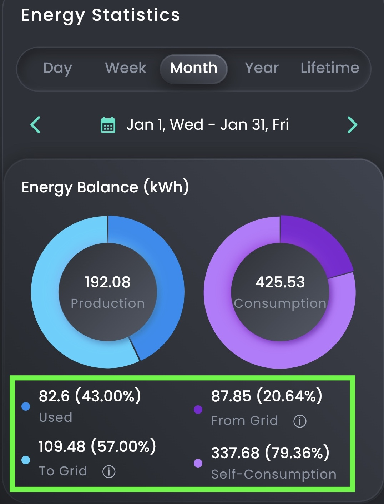
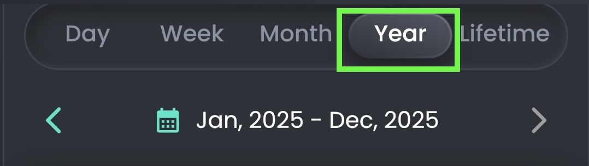
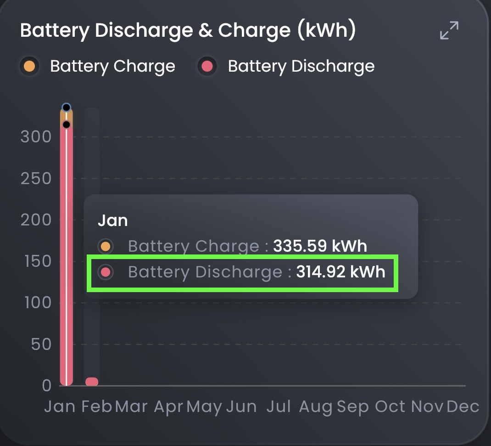

Make your own - if you have Sigen system with a battery
Fill in the numbers from the app and press Generate
You can see on the pictures from where to take the first 4 numbers
The last number "offset" is to adjust the position of the battery
It can be anything from -150 to +150 just play with the number until the graph looks nice


